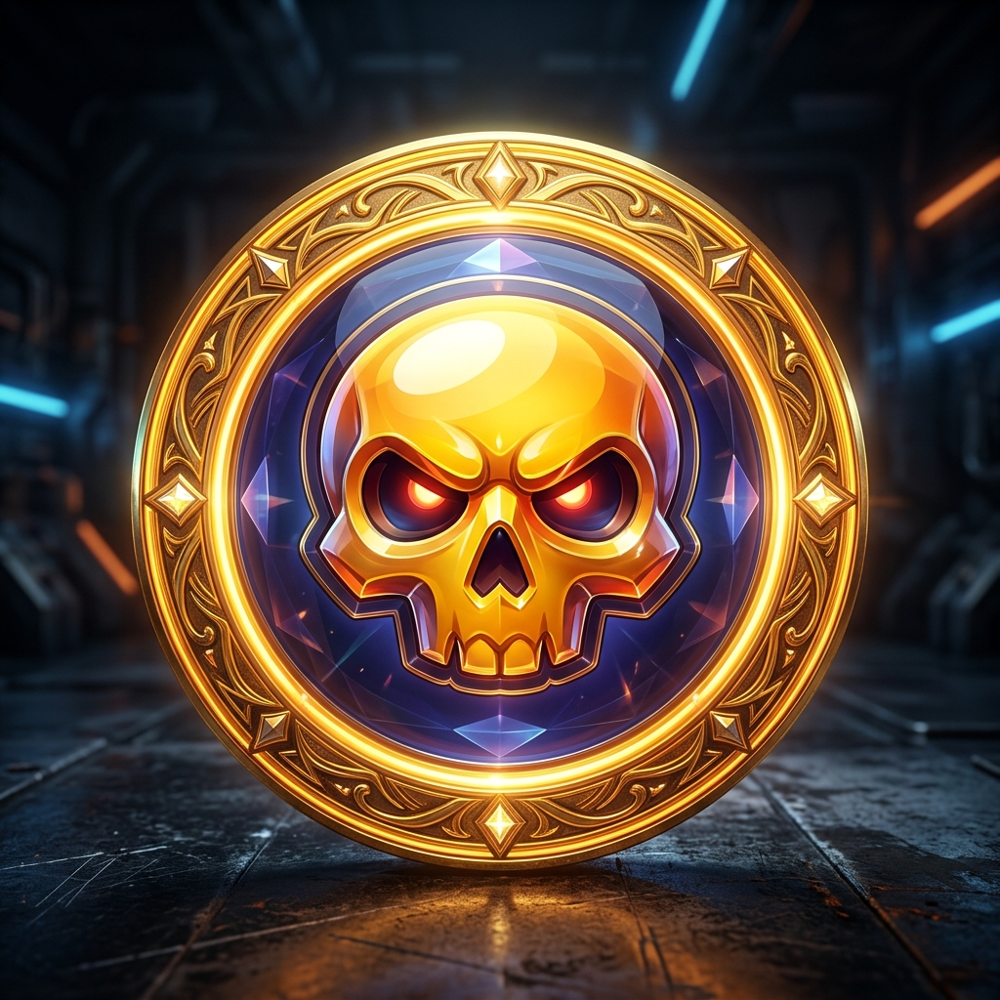
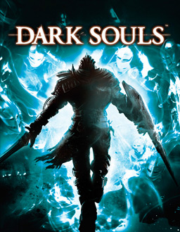
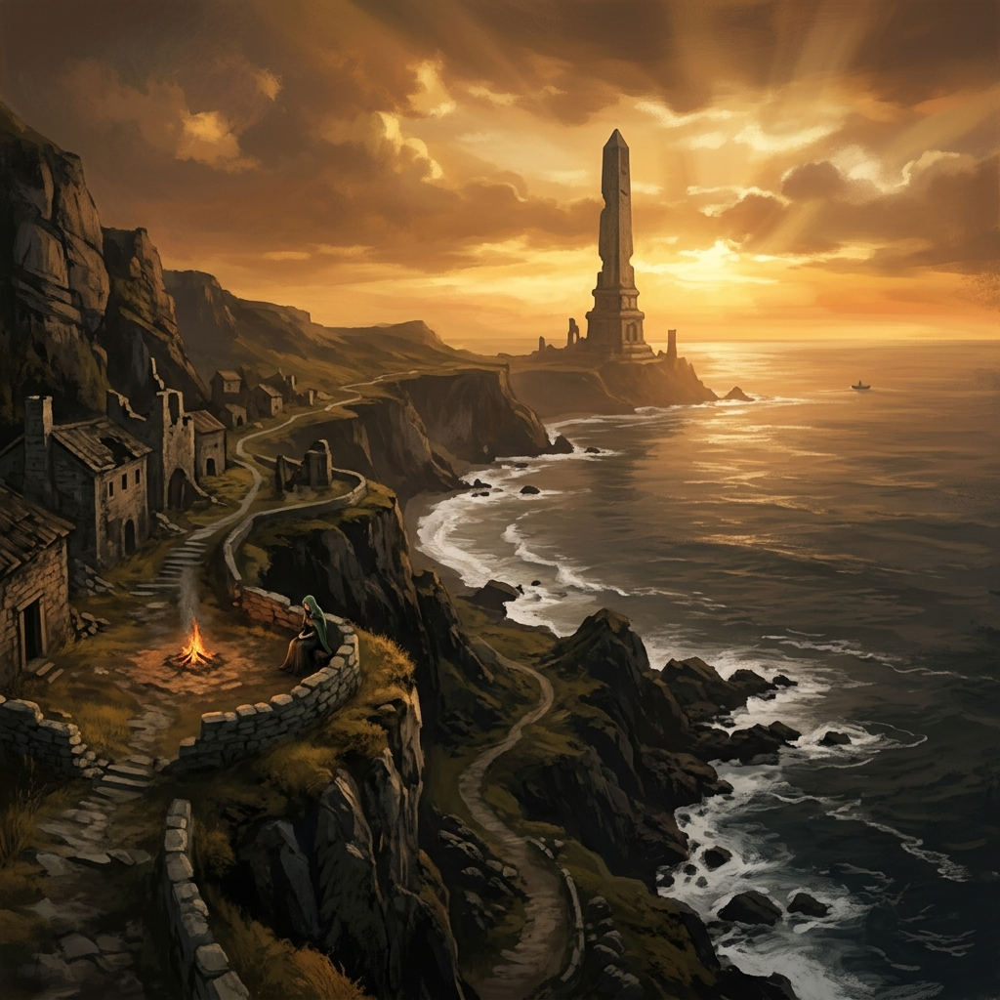
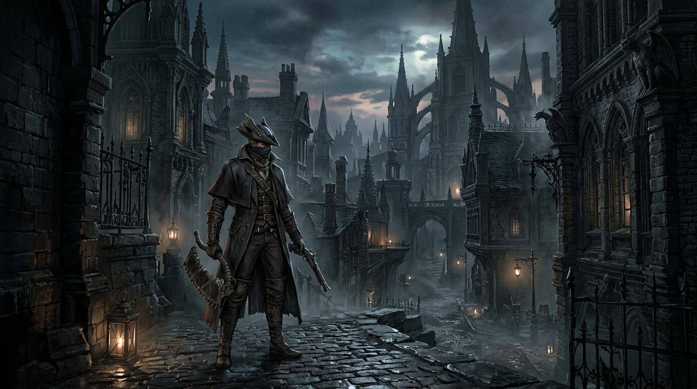
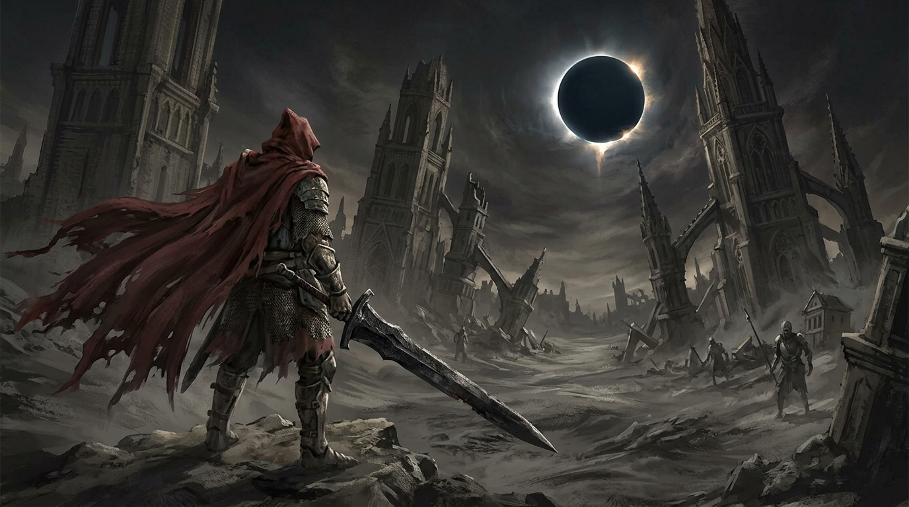
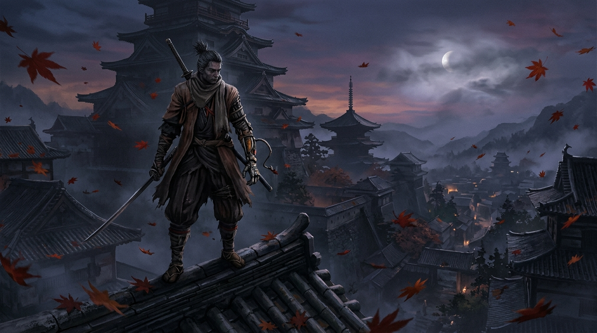
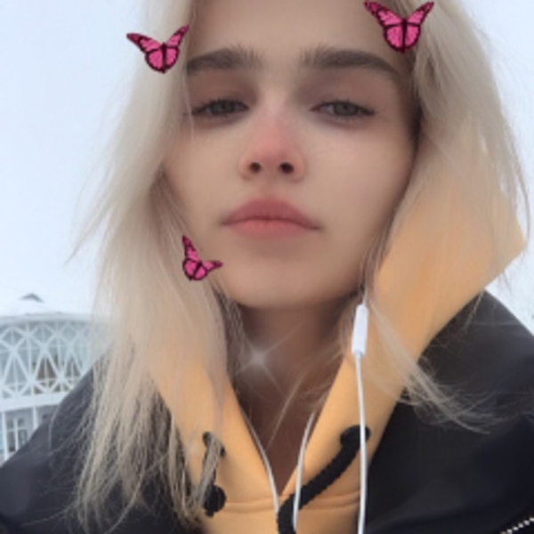
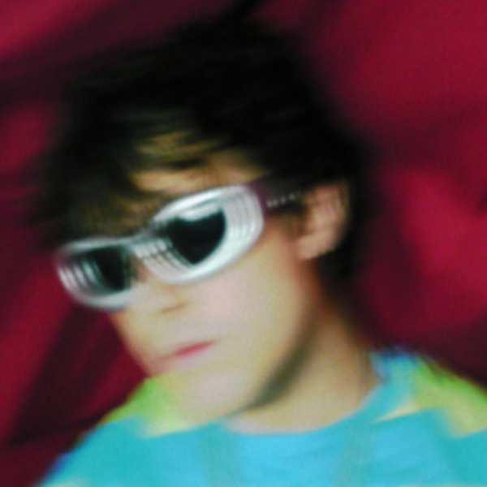
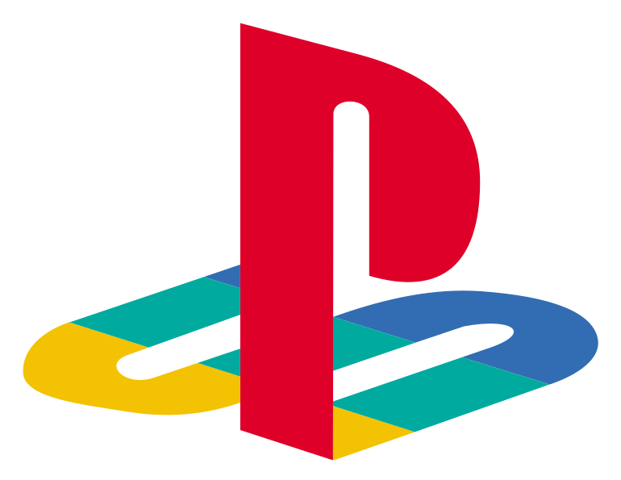
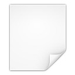

cr1mnsx
-
cr1mnsx Консольщик на PS5, преданный фанат Souls-like игр (Dark Souls 1) и зритель стримов Мафани (лор с Владом).
«Don't you dare go Hollow» — костры горят, боссы падают.
- Платформа
- PlayStation 5 & PC
- Жанр
- Soulslike (Souls-игры)
- Фаворит
- Dark Souls 1 (Top-1 Souls)
- Любимый стример
- mafanyaking
- Twitch
- cr1mnsx
- Steam
- cr1mnsx
- ВКонтакте
- vk.ru/cr1mnsx
- Brawl Stars
- #2RGUQJQ0R (Brawlify)
Souls-like
-
PlayStation Network · Профиль Cr1mnsx
Карточка игрока «Терминал» · 647 трофеев, 2 платины, LVL 186 · psn.gg

-

Brawl Stars · Профиль #2RGUQJQ0R 🏆 28,450+ кубков · 3v3 победы · Ежедневный актив · brawlify.com -

Dark Souls 1 — Топ-1 любимая часть Лордран, Храм Огня, Арториас, Гвин и незабываемый первый опыт в жанре. -

Dark Souls II — Тема Маджулы (Majula) Мотои Сакураба · Культовый саундтрек заката Дранглика · Нажмите для включения темы -
PlayStation 5 & DualSense Тактильный отклик ударов и парирований, Demon's Souls Remake и Bloodborne на консоли.
-
 Elden Ring & Shadow of the Erdtree
Безупречный открытый мир, величие Междуземья и сложнейшие боссы.
Elden Ring & Shadow of the Erdtree
Безупречный открытый мир, величие Междуземья и сложнейшие боссы.
-

Bloodborne (Мечта о 60 FPS) Охота в Ярнаме, лавкрафтовская атмосфера и лучший сеттинг FromSoftware. -

Dark Souls III: The Ringed City Эпичное завершение трилогии, Безымянный Король и рыцарь-раб Гаэль. -

Sekiro: Shadows Die Twice Звон клинков, идеальные дефлекты и победа над Иссином.

Twitch
-

cr1mnsx на Twitch twitch.tv/cr1mnsx · Мой профиль на твиче -

mafanyaking (Илья Мафаня) twitch.tv/mafanyaking · Любимый стример - ТГК Мафани (Toxic Legion) t.me/toxiclegion · Официальный телеграм-канал Мафани
- Сайт Мафани (Архив Пранков) mafanya.ru · Все легендарные пранки и проекты
- Влад Клёвые Тачки (Диор Армани) t.me/VLADAPRMANI · Телеграм Влада, легендарного персонажа лора
- Новости по Мафане (Бомбастер) t.me/bombastertg · Нарезки, анонсы и свежие новости
Игры
-

Tekken 3 (Sony PS1) Культовый 3D-файтинг · Джин Кадзама, Хваран, Эдди Гордо · 60 FPS - Crash Bandicoot 3: Warped Naughty Dog · Платформер с путешествиями во времени · Топ-1 PS1
- Crash Team Racing (CTR) Naughty Dog · Легендарные аркадные гонки с дрифтом и оружием
- Crash Bandicoot 2: Cortex Strikes Back Золотая классика Naughty Dog · 25 уровней, ранец и Поляр
- Crash Bandicoot (Оригинал 1996) Первое культовое приключение сумчатого бандикута на Wumpa Island
- Mortal Kombat Trilogy Midway · Все бойцы и арены классической трилогии · Fatality & Brutality
- Silent Hill Konami / Team Silent · Культовый психологический хоррор 1999 года
- Resident Evil 3: Nemesis (на русском) Capcom · Побег Джилл Валентайн из Раккун-Сити · Русская версия
- Resident Evil: Director's Cut Capcom · Особняк Спенсера · DualShock версия survival horror
- Metal Gear Solid (Диск 1) Хидэо Кодзима / Konami · Кинематографичный тактический стелс-экшен
- Gran Turismo 2 (Arcade Mode) Polyphony Digital · Главный автосимулятор PlayStation 1 · Сотни авто
- Castlevania: Symphony of the Night Konami · Шедевр Алукарда в замке Дракулы · Родоначальник метроидваний
- Tony Hawk's Pro Skater 2 Neversoft / Activision · Скейтборд-культ 2000 года с топовым саундтреком
- Spyro the Dragon Insomniac Games · Полёт, пламя и сбор кристаллов в мире драконов
- Twisted Metal 2: World Tour SingleTrac / Sony · Смертельные автобои по всему миру · Sweet Tooth
- Grand Theft Auto 2 Rockstar Games · Война банд в ретро-футуристичном городе Зайбацу
- PlayStation 1 (PSX) · Запуск своего диска / ROM Запуск любых своих образов .ISO, .BIN, .CHD, .PBP · DualSense & геймпады
Линки
- ВКонтактеvk.ru/cr1mnsx
 Steam Профильcr1mnsx
Steam Профильcr1mnsx- Twitch Профильtwitch.tv/cr1mnsx
- Канал Мафани на Twitchtwitch.tv/mafanyaking
- ТГК Мафани (Toxic Legion)t.me/toxiclegion
- Сайт Мафани (Архив Пранков)mafanya.ru
- ТГ Влада Клёвые Тачкиt.me/VLADAPRMANI (@VLADAPRMANI)
- Новости по Мафане (Бомбастер)t.me/bombastertg
- PlayStation NetworkPSN: cr1mnsx · PlayStation 5
- Telegramt.me/cr1mnsx
Об этом сайте
-
Сайт cr1mnsx · Frutiger Aero x PS5/PS3 XMB
-
Визиты сайта: …
- Видео-аватарDu du du du Max Verstappen

Живой аквариум на фонеSkeuomorphic live video background- Звуки меню PS3Синтезированы через Web Audio API
- Шрифт M PLUS 1pM+ Fonts Project · SIL OFL